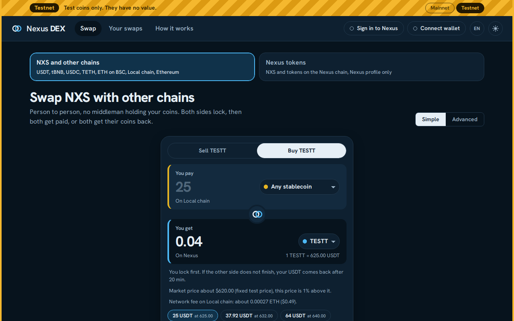
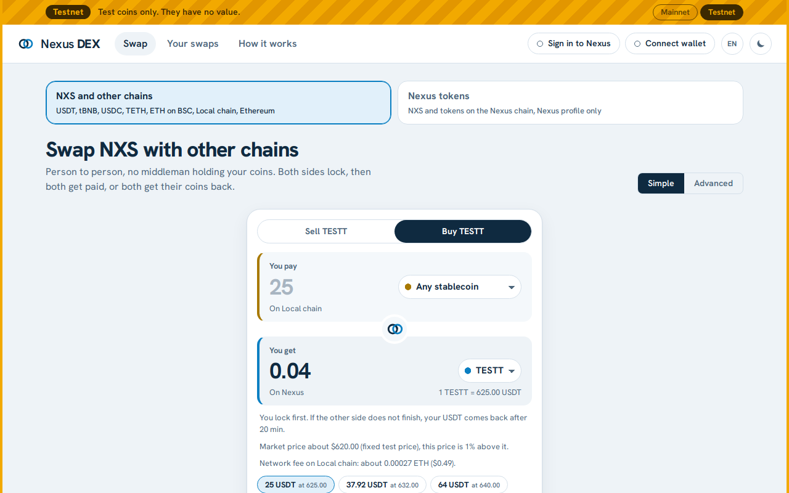
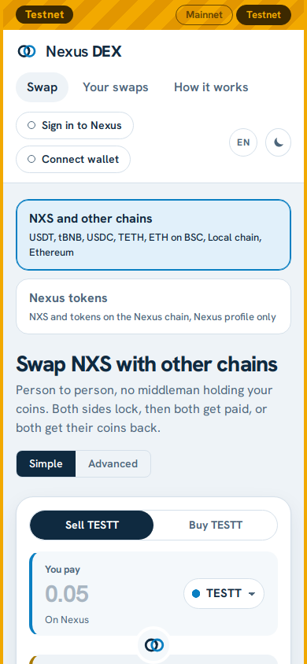
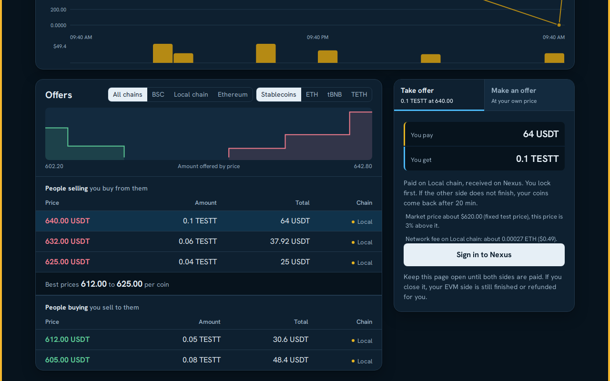
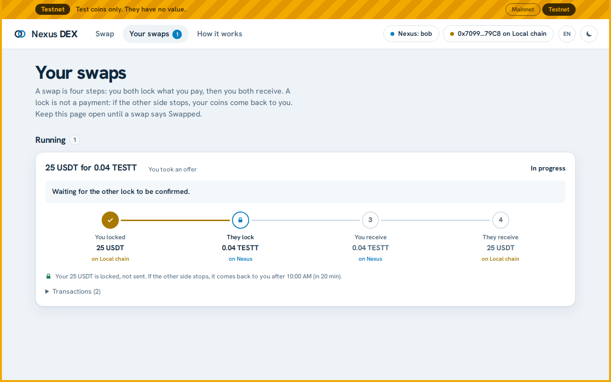
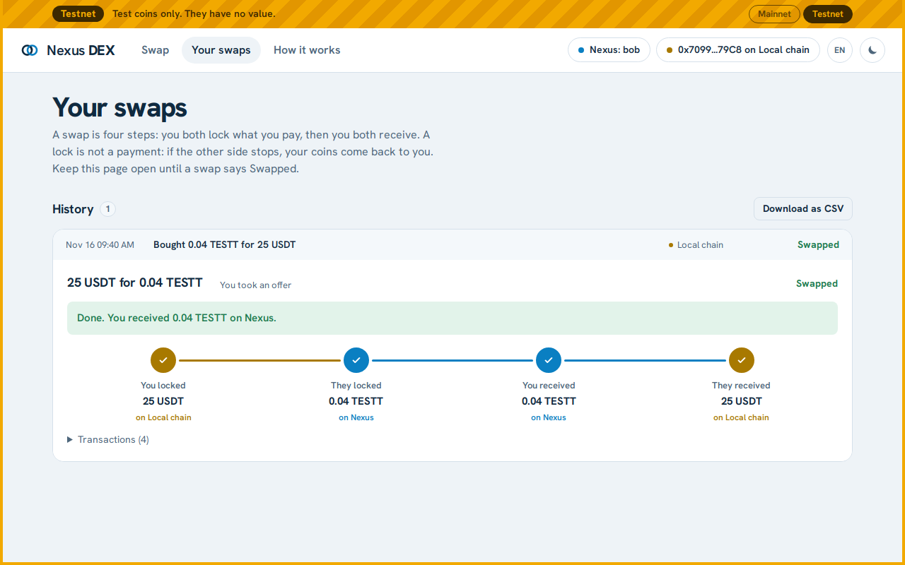
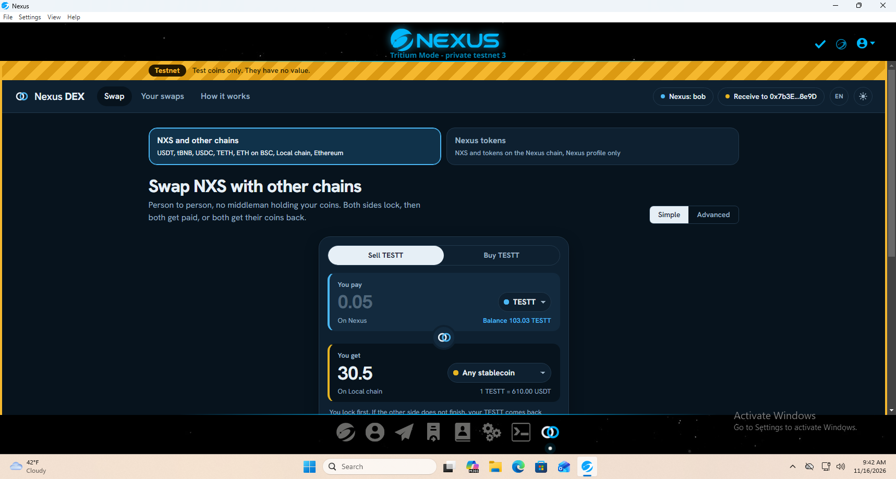
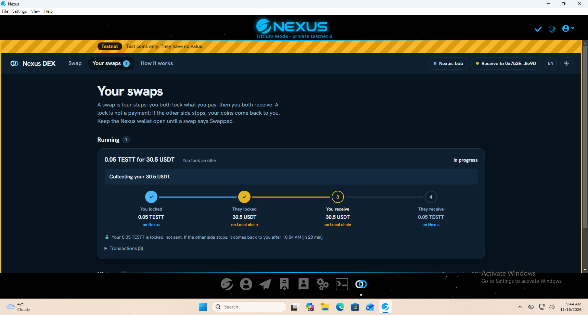

NXS and Nexus tokens against USDT, USDC, ETH, BNB and POL on BSC, Polygon, Ethereum, Arbitrum and Base, with atomic swaps. In the browser and inside the Nexus desktop wallet.
Overview for the Nexus team
November 2026
Nexus · impressions@nexus.io

The buyer makes a secret and locks first. Both locks open with the same secret, and only until their deadline.
The taker can only take the NXS by publishing the secret, and the secret opens the USDT for the maker. If the taker never reveals it, both locks run out and both refund. The taker claims only until shortly before the maker's deadline, so the maker always has hours left to use the secret.




Both sides locked; the taker's NXS claim is next. The page says where each coin is and when it comes back if the other side stops.

Done: history with every transaction on both chains, linked to the explorers, and a CSV download.

Nexus Wallet 3.1.5 with the DEX module (developer mode), on the private test chain.

| If | Then |
|---|---|
| The other side never locks | Your lock runs out and you refund it. The page does it, or the service, or an independent keeper. |
| You close the page in the middle | The relay's watcher finishes your EVM side (claim or refund); open the page again and it carries on. |
| Your receiving address is frozen by USDT or USDC | Have it paid to another address of yours (claimTo for a payment, refundTo for a refund). |
| A chain reorganizes | Nothing is answered before the other lock has the confirmations set per chain. |
| A Nexus node lies about a lock | The page and the maker program ask other Nexus nodes (witnesses) before locking EVM coins. |
| A token takes a fee on transfer | The contract refuses the lock: it would hold less than both sides agreed on. |
| The service goes away | Running swaps still finish or refund: locks open only with the secret or after the deadline, and anyone can send the refund. |
| Someone tries to redirect coins | Impossible: a claim always pays the recipient written in the lock, a refund always pays the sender. |
Internal security reviews with separate reviewers per part (contract, swap engine, site, relay, keeper, maker program), each finding checked against the code and fixed or tracked. An outside audit of the contract is recommended before mainnet.
TypeScript throughout (React site, Node services), Solidity 0.8.28 with Foundry.
Review and verify the module (the usual repository verification: public repo, commit hash, signed repo_info.json), so wallet users can install it without developer mode.
Who runs the relay and a keeper on mainnet: a small VPS, Nexus infrastructure, or both (two independent keepers make it stronger). Costs are low; see "What mainnet needs".
Which chains first (BSC and Polygon are the cheapest to use), the largest swap at launch, and when to raise it.
An outside audit of the contract, then a careful public beta with small amounts, announced through Nexus channels.
A few makers with NXS and stablecoins on both sides at launch, for example with the maker program.
Documents with this overview: NexusSwap contract guide, What mainnet needs. Contact: impressions@nexus.io